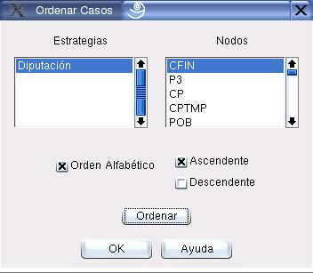

Ordenar los Casos
Con esta opción el usuario puede ordenar los casos según dos posibles criterios: por orden alfabético, o según el valor representatyivo de un nodo específico. La Figura 4.3 muestra el cuadro de diálogo. Para acceder a él se deben seleccionar las opciones del Menú:
Proyecto  Ordenar
Ordenar
Los principales componentes de este cuadro de diálogo se explican a continuación:
- Estrategias y Nodos:
- En estos listados se seleccionan la estrategia y el nodo específicos según los cuales se ordenarán los casos.
- Orden Alfabético:
- Seleccione esta opción si desea que los casos se oreden alfabéticamente, en lugar de numéricamente.
- Ascendente/Descendente:
- Estas opciones mutuamente excluyentes permiten seleccionar el sentido del ordenamiento.
Figura 4.3:
Diálogo para ordenar los casos
|

|
Oscar Duarte
2005-05-01